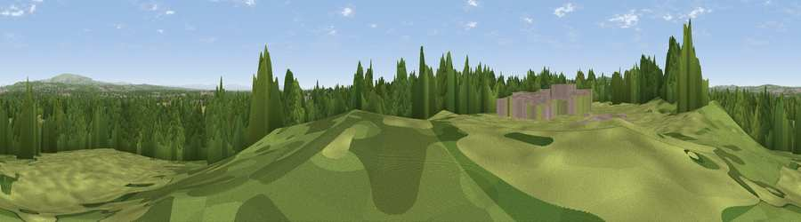

Viewpoint near Bamfurlong
#27618 in England · top 71% of its area beats it · near BamfurlongThe view, rendered

A 360° render of this exact spot computed from the terrain model, tree cover and land cover — summer colours, afternoon light, calibrated against photographs of famous viewpoints. Real trees, hedges and buildings will differ in detail.
The panorama
Grey silhouette: terrain skyline in each direction (720 bearings, Earth curvature and refraction included). Dashed green: skyline with trees (+15 m) and buildings (+8 m) as obstacles. Blue strip: how far the ground is visible on each bearing.
Where the view opens
Wedge length = distance to the farthest visible ground on that bearing (vegetation-aware). Rings at 10, 25 and 50 km.
What fills the view
40% woodland · 30% grassland · 19% cropland · 11% built-up · 1% water
Angular shares of the visible panorama (visual magnitude), not map area. Landscape diversity 0.58 (0–1 Shannon).
Key numbers
More beautiful places nearby
The staircase of upgrades: each row has a higher view potential than everything closer. Driving times are estimates from straight-line distance, calibrated against real road routing — check an actual route before setting out.
| Place | Direction | Drive | Score |
|---|---|---|---|
| Weathercock Hill | WSW · 4 km | ~9 min | 56.8 |
| Viewpoint near Haydock | SSW · 5 km | ~11 min | 61.1 |
| Viewpoint near Billinge | W · 5 km | ~12 min | 68.0 |
| Billinge Hill | W · 6 km | ~12 min | 73.8 |
| Viewpoint near Dalton | NW · 11 km | ~20 min | 74.2 |
| White Brow | NE · 13 km | ~25 min | 82.9 |
| Warton Crag | N · 72 km | ~95 min | 83.2 |
| Viewpoint near Grange-over-Sands | NNW · 79 km | ~103 min | 83.4 |
53.50736, -2.63009 · source: osm viewpoint · position refined by local search. Computed location — check access rights before visiting.